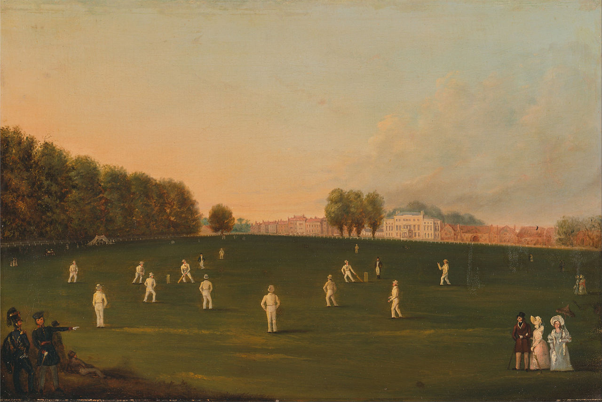

Cricket is played with two teams of 11 players a side,one being the batting team while the other one is the fielding team. It is generally played on field with the main playing surface being called a "pitch". Team A will bat first and try to score as many runs as possible while the second team, team B, will bowl and field to make it as hard as possible for the batting team A to score these runs and to get them out. Once team B are all out or otherwise their batting is determined closed as per the laws,the teams then swap over. So team B will bat to try and beat the score (number of runs scored) set by team A. Team B will bowl and field and try and restrict Team B from beating their score and getting them all out before they do.
They play cricket all over the world Above all they have fun doing so! there are 6 key elements of cricket:
we can bring a good introductory compilation of the key aspects of the game through some video footage.